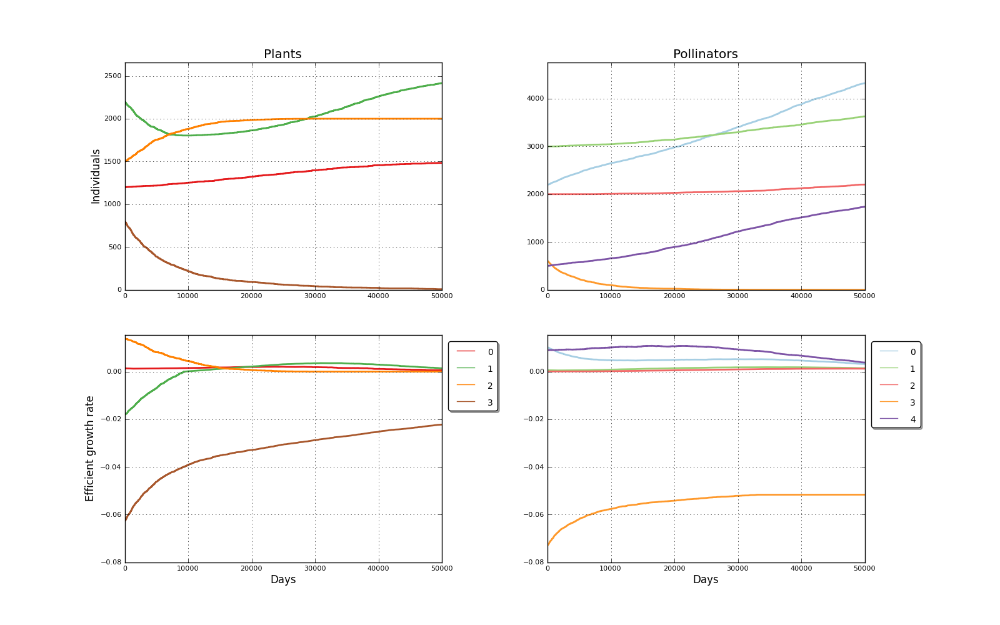

Binomial simulated mutualistic interaction. Input file: exper_jtb_stab2   days: 50000<br>============================================================================<br>ALGORITHM: Logistic_abs<br><br>Plants matrix: <a href='../input/exper_jtb_stab2_a.txt' target=_BLANK>exper_jtb_stab2_a.txt<a><br>Pollinators matrix: <a href='../input/exper_jtb_stab2_b.txt' target=_BLANK>exper_jtb_stab2_b.txt<a><br>Plant species: 4<br>Plant initial populations [1200, 2200, 1500, 800]<br>Pollinator species: 5<br>Pollinator initial populations [2200, 3000, 2000, 600, 500]<br>Pollinator species 3 extinction in day 33113<br>Elapsed time 142.76 s<br><br>Plant populations data: <a href='output_data_exper_jtb_stab2_Logistic_abs_a_populations__collapse_50000.txt' target=_BLANK'>output_data_exper_jtb_stab2_Logistic_abs_a_populations__collapse_50000.txt<a><br>Plant rates data: <a href='output_data_exper_jtb_stab2_Logistic_abs_a_rs__collapse_50000.txt' target=_BLANK'>output_data_exper_jtb_stab2_Logistic_abs_a_rs__collapse_50000.txt<a><br>Pollinators evolution data: <a href='output_data_exper_jtb_stab2_Logistic_abs_b_populations__collapse_50000.txt' target=_BLANK'>output_data_exper_jtb_stab2_Logistic_abs_b_populations__collapse_50000.txt<a><br>Pollinators rates data: <a href='output_data_exper_jtb_stab2_Logistic_abs_b_rs__collapse_50000.txt' target=_BLANK'>output_data_exper_jtb_stab2_Logistic_abs_b_rs__collapse_50000.txt<a><br><br>Created 2013-03-21 22:24:51.968000<br><p align=left><br>Populations evolution picture<br></p><br>